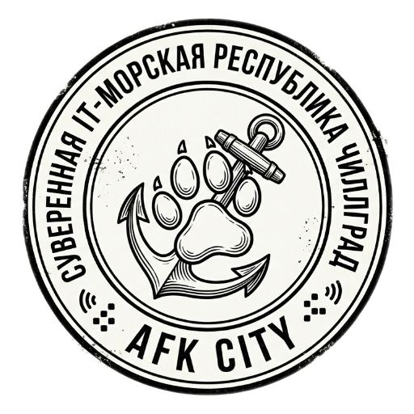

Государственный флаг

Две горизонтальные полосы:
— Верхняя: узкая, голубая — морская безопасность и открытость;
— Нижняя: широкая, тёмно-зелёная — стабильность, природа, покой.
В центре — государственная эмблема: собачья лапа, совмещённая с якорем, центр лапы — золотой диск.
Государственный герб
Щит разделён на четыре равные части:
Символ: устойчивость, морская держава.
Символ: технологический суверенитет.
Символ: идентичность народа, дружелюбие.
Символ: благосостояние, связь, культура.
В центре щита: белый силуэт морского ежа (оборонная доктрина).
Над щитом: открытый ноутбук (вместо короны).
Под щитом: лента с девизом «Беречь наследие, не нарушая покоя».
Государственная печать

Форма: круглая, монохромная (чёрный оттиск на белом).
Центр: собачья лапа, совмещённая с якорем.
Верхняя дуга: «СУВЕРЕННАЯ IT-МОРСКАЯ РЕСПУБЛИКА ЧИЛЛГРАД».
Нижняя дуга: «AFK CITY».
Декор: сигнальные волны и пиксельные точки по бокам.
Статус: утверждена и внесена в государственный реестр.
Девиз государства
Это не просто слоган — это законодательный принцип. Любой нормативный акт, противоречащий духу данного девиза, признаётся неконституционным. Девиз олицетворяет сохранение исторической преемственности и обеспечение всеобщего блага через соблюдение личных границ и минимизацию деструктивной деятельности.
Государственный гимн
Гимн Королевства — инструментальное музыкальное произведение продолжительностью 3 минуты 22 секунды. Жанр: lofi, без слов. Исполнение и прослушивание не сопряжено с возложением на граждан дополнительных обязанностей. Во время звучания гимна граждане вправе продолжать свои дела. Принудительное вставание не предусмотрено.